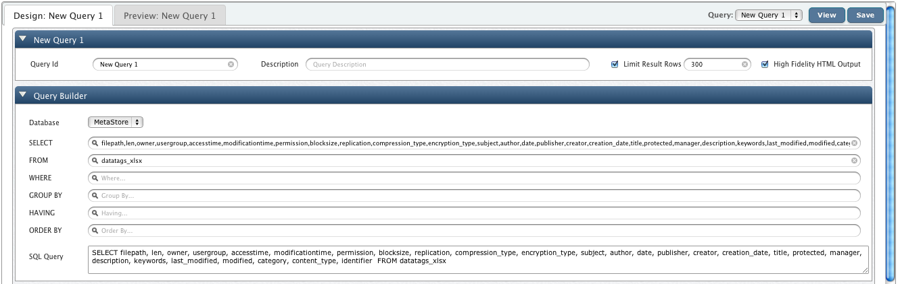
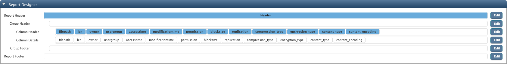
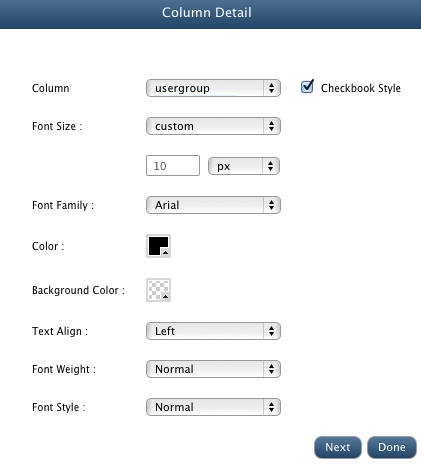
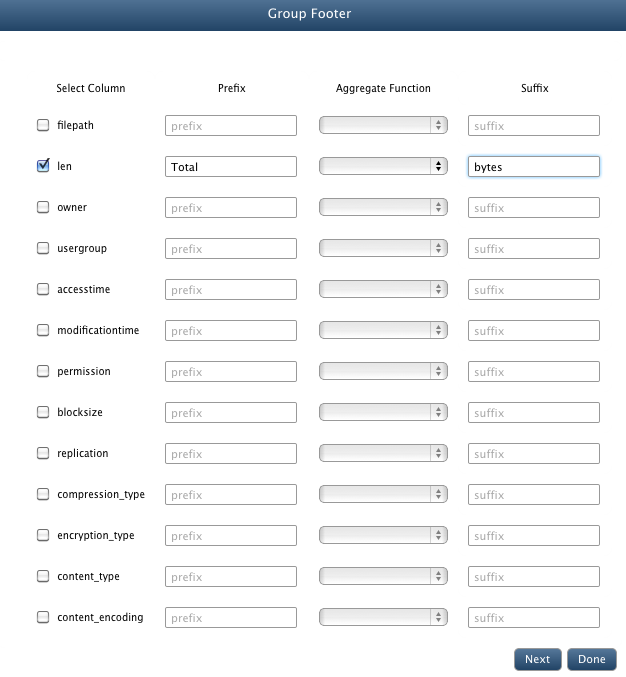
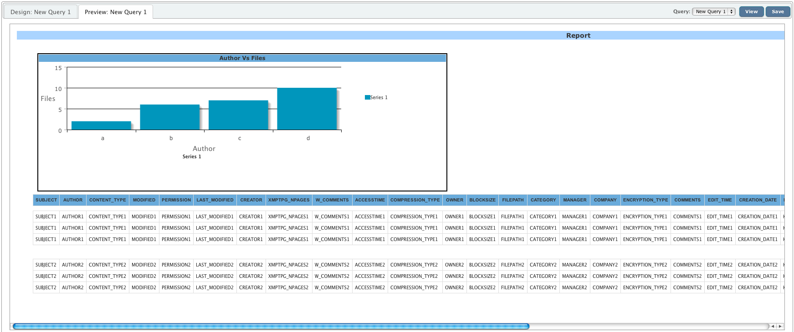

Basic Query Designing
In this chapter
This chapter explains about querying data stored on cluster based on metadata extracted by creating big queries and reports .
Introduction
QueryIO provides a querying framework which allows you to perform standard SQL queries on your Big Data.
QueryIO also provides querying tags associated with your data files.
QueryIO Analytics is an easy to use interface through which you can generate SQL queries and design reports to present your processed data.
Query Designer can be used to query the metadata extracted from the files. QueryIO provides a user interface for defining work item queries.
Query designer is composed of two modules:
- Query Builder
- Report Builder
Query Builder allows us to define grouping, sorting and constructing criteria in a simple and direct way. It also allows you to save queries and use them again later.
Query builder is basically used to filter out the files available on the cluster. Files can be filtered on the basis of file types(table name).
Using report builder interface of QueryIO, you can build reports to format the result of queries.
You can easily create Select query with the help of Query Designer.
Creating Queries
Query Designer provides interface to create queries easily. Following are the steps to build query:
Compose Query
If you have not yet uploaded any files to the cluster, please go through the Data Migration doc to check how to upload files to HDFS cluster using QueryIO.
By default, the metadata for unregistered file types is saved in hdfs_metadata table
- You can use Query Builder view to create queries. It generates standard SQL queries.
- Query Id: Unique id for the Hadoop SQL query.
- Database: Select database whose data is to be queried.
- Description: Little description to explain working of Hadoop SQL query.
- Limit Result Rows: To limit the number of rows displayed on Query Viewer. You can specify the number of rows to be displayed.

Click on SELECT textbox to select the names of the columns you want to fetch with the query.
Click on FROM textbox to select the name of the table on which you want to execute the query.
Click on WHERE textbox to add any conditional clauses to your query. Only those records that fulfill the specified criteria will be included in the result.
Click on GROUP BY textbox to select the names of the columns that you want to group your result set by. It is used in conjunction with the aggregate functions to group the result-set by one or more columns.
For example, the query "SELECT owner,sum(len) FROM hdfs_metadata GROUP BY owner" would return the total storage space utilized by each user.
Click on ORDER BY textbox to select the names of the columns that you want to sort your result set by.
Click on HAVING textbox to provide conditions on aggregate functions.
Once you have constructed the query, click on Save button to save the generated query so that you can re-use it later.
Click on View to execute the query. On executing the query, you will be taken to a new tab.

Report Builder
Using report builder interface of QueryIO, you can build reports to present the contents of the queries that you
can perform using the query builder interface.
Report builder comprises of three modules:
- Report Designer
To specify the layout and design of various components of the report like report header, footer, etc.
- Report Preview
In the report preview section, you can see the preview of the report that will be generated with the current configuration.
This section will show you how easily you can build reports using QueryIO.
To build reports, go to Analytics > Query Designer.
Create new query using Query Builder view or load existing query using Query Manager page.
Following are the steps to build customized reports:
Report Designer

Report Header
The Report Header section generally contains the report title and other information you want to appear only at the beginning of the report.
Charts in this section contain data for the entire report.
-
To customize report header, click on the Edit button adjacent to the Report Header block in the report designer view.
-
You can specify the contents of the report header in the Title edit box
-
In this window, you can also configure the styles that would be applied to the report header.
-
Click Done once you have configured all the properties as per your requirements.
Group Header
It contains the part of the message used to indicate the start of a functional group of documents.
Group Headers are useful and often necessary to make your report data clear and easily understood.
-
To customize group header, click on the Edit button adjacent to the Group Header block in the report designer view.
To group your result set by various columns respective column names using adjacent checkboxes.
-
You can also specify prefix and suffix for your group header value.
Lets say, if the group header content is "admin" and you have selected prefix to be "User: ", then the group header
content in the report will be
User: admin
-
Click Next to configure the styles that you want to apply to the selected group headers.
- Select the column name that you want to apply styles to and then edit other style related properties.
You can configure styles for other columns by selecting respective column names from the Column dropdown box.
-
Click Next to specify custom formatting for group header content. Here you can specify the
formatting of the data for various data types.
-
Click Done once you have configured all the properties as per your requirements.
Column Header
The column header is the colored row of letters used to identify each column within the table. The column header row is located above the row one.
-
To customize column header, click on the Edit button adjacent to the Column Header block in the report designer view.
- Select the column name that you want to apply styles to and then edit other style related properties.
You can configure styles for other columns by selecting respective column names from the Column dropdown box.
-
Click Done once you have configured all the properties as per your requirements.
Column Details
Column details refer to the contents of the columns of non header rows in the table.
-
To customize column details, click on the Edit button adjacent to the Column Details block in the report designer view.

- Select the column name that you want to apply styles to and then edit other style related properties.
You can configure styles for other columns by selecting respective column names from the Column dropdown box.
-
Click Done once you have configured all the properties as per your requirements.
Group Footer
It contains the part of the message used to indicate the end of a functional group of documents.
Group Footers are useful and often necessary to make your report data clear and easily understood.
-
To customize group footer, click on the Edit button adjacent to the Group Footer block in the report designer view.

-
If you want to group footers by various columns, you can do it here.
Select respective column names using adjacent checkboxes.
-
You can also select aggregate function to perform on the group footer content
You can also specify prefix and suffix for your group footer value.
Lets say, you have selected aggregate function to be SUM, prefix Total and
suffix bytes, then the group footer content in the report will like
Total 100 bytes where 100 is the sum of the values of the specified column in all the rows belonging to the current group.
-
Click Next to configure the styles that you want to apply to the selected group footers.
- Select the column name that you want to apply styles to and then edit other style related properties.
You can configure styles for other columns by selecting respective column names from the Column dropdown box.
-
Click Next to specify custom formatting for group footer content.
-
Click Done once you have configured all the properties as per your requirements.
Report Footer
-
To customize report footer, click on the Edit button adjacent to the Report Footer block in the report designer view.
-
You can specify the contents of the report footer in the Title edit box
-
In this window, you can also configure the styles that would be applied to the report footer.
-
Click Done once you have configured all the properties as per your requirements.
Report Preview

Here you can see the preview of the report that will be generated with the current configuration.
Copyright © 2017 QueryIO Corporation. All Rights Reserved.
QueryIO, "Big Data Intelligence" and the QueryIO Logo are trademarks
of QueryIO Corporation. Apache, Hadoop and HDFS are trademarks of The Apache Software Foundation.